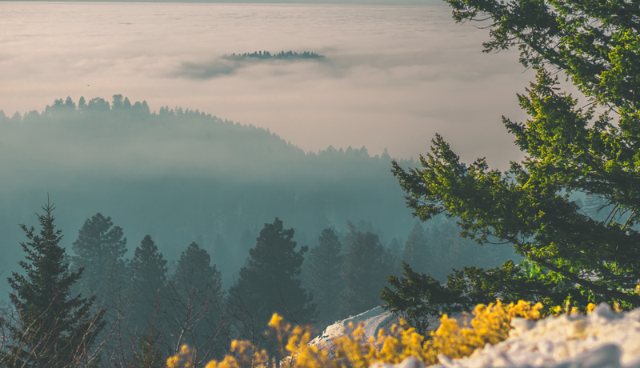
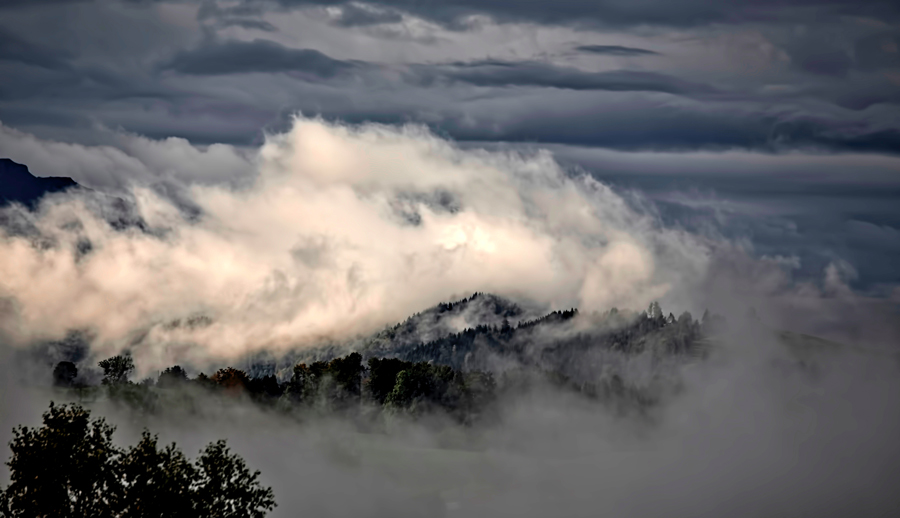
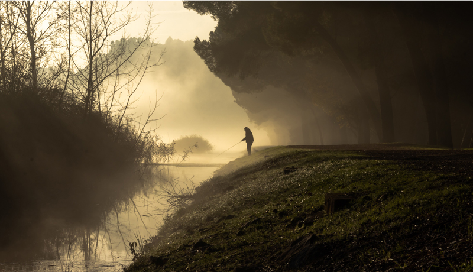
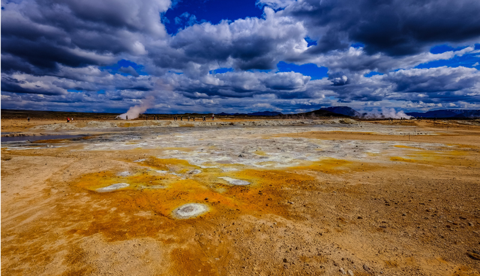
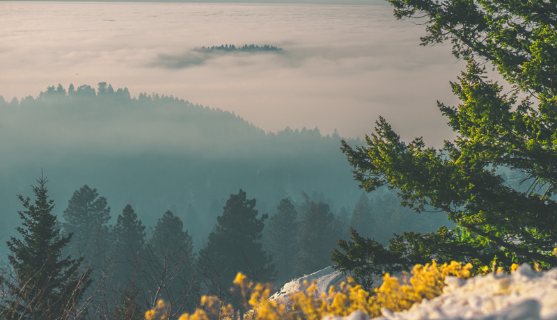
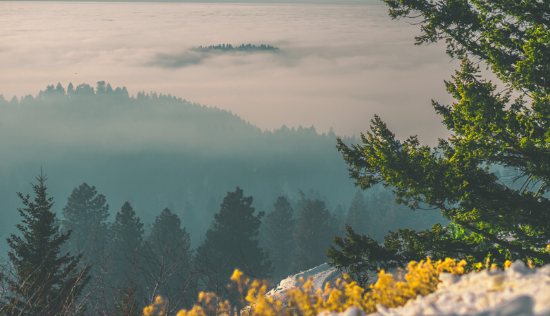
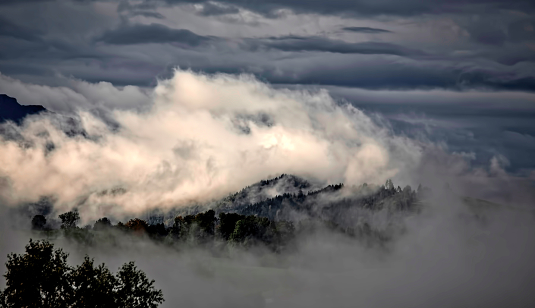
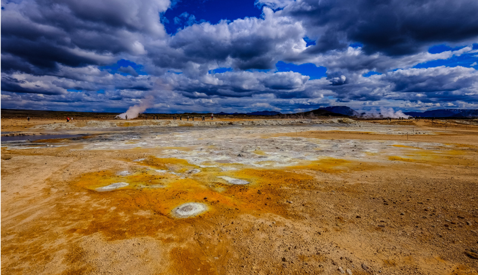
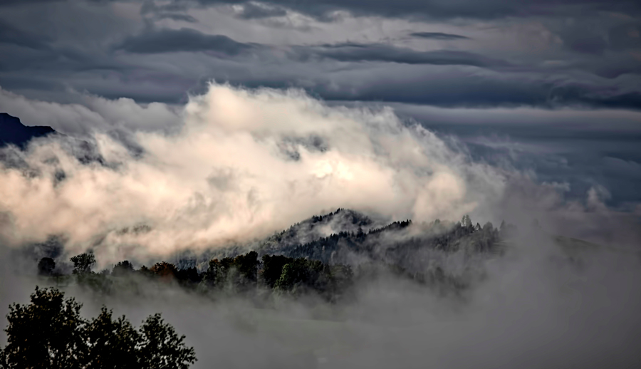
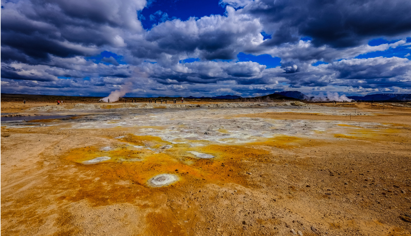

The Storm Sentry
Sun or Rain, Let's Play
☰ Menu
Home
Preston
Soda Springs
Fish Haven
Storm Center
Gallery
Gallery
Drive all day

Majestic mountain veiws
Sand dunes and lakes

Cloud covered mountains

Rivers full of fun

Open fields for miles

 Drive all day

Majestic mountain veiws
Drive all day

Majestic mountain veiws
 Sand dunes and lakes

Cloud covered mountains

Open fields for miles
Sand dunes and lakes

Cloud covered mountains

Open fields for miles